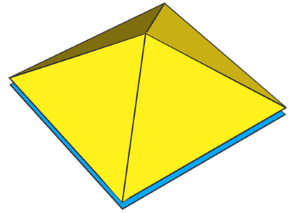
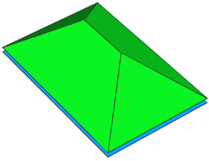
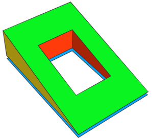
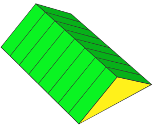
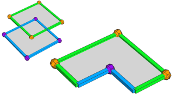
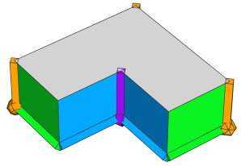
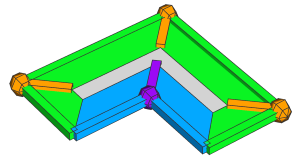
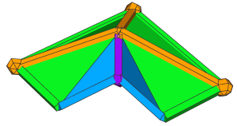

Geometry Tagging: Essential Knowledge
This section explains concepts fundamental to geometry tagging.
Component Tags
Tags are string-based information stored directly on the topological components of a shape's geometry asset. Each face, edge, and vertex may have an arbitrary number of tags. Their purpose is to identify semantically different parts of the geometry, for example when using the comp operation.
A tag is a string that defines its name. Example: "Name"
Tag hierarchy
Tags are hierarchically grouped with the name separator "." (dot). Example: "Facade.Front", "Facade.Side"
The dot-separated names within a tag are referred to as subtags.
Tag queries
A tag query is a string that may include wildcards to replace subtags. There are two wildcards:
| ? (question mark) | Matches exactly 1 subtag. Example: "?.Front" |
| * (asterix) | Matches 1 or more subtags. Example: "Facade.*.Left" |
Based on the hierarchical grouping, the tag query "Facade" matches not only the exact tag "Facade" but also tags with additional subtags, such as "Facade.Front", "Facade.TypeA.Side.Left".
Related
Auto-Tags
Selected geometry creation operations automatically apply predefined tags. These tags identify semantically different parts of the output geometry.
Auto-tags applied by a certain operation remain accessible until the operation is called again, replacing them with new ones.
Colors
These are the rules for the colors used in the following examples.
Blue --> color("#0399F5")
Green --> color("#09DE1F")
Yellow --> color("#FADB19")
Purple --> color("#8D09DE")
Red --> color("#FF360A")
Orange --> color("#FA9100")
Operations applying auto-tags on faces
Face components are categorized into three principle types: bottom, side, and top. The bottom components correspond to the original faces, while the new side faces may be further categorized as either inner or outer, depending on whether they emanate from a hole.
Extrude

See extrude operation.
Init -->
extrude(4)
comp(f) { isTagged("extrude.bottom") : Blue
| isTagged("extrude.side.outer"): Yellow
| isTagged("extrude.side.inner"): Red
| isTagged("extrude.top") : Green }
Envelope

See envelope operation.
Init -->
envelope(normal, 4, 2.5, 45, 3, 45, 2, 50, 2, 50)
comp(f) { isTagged("envelope.bottom") : Blue
| isTagged("envelope.side.base") : Yellow
| isTagged("envelope.side.slope"): Orange
| isTagged("envelope.side.inner"): Red
| isTagged("envelope.top") : Green }
Taper

See taper operation.
Init -->
taper(4)
comp(f) { isTagged("taper.bottom"): Blue
| isTagged("taper.side") : Yellow }
Roofs
All roof operations apply the same base tag "roof".

See roofGable operation.
Init -->
roofGable(byHeight, 4)
RoofAutoTags1
RoofAutoTags1 -->
comp(f) { isTagged("roof.bottom") : Blue
| isTagged("roof.side") : Yellow
| isTagged("roof.top") : Green }

See roofHip operation.
Init -->
roofHip(byHeight, 4)
RoofAutoTags1

See roofPyramid operation.
Init -->
roofPyramid(byHeight, 4)
RoofAutoTags1
The roofRidge and roofShed operations additionally classify the sides as inner and outer.

See roofRidge operation.
Init -->
roofRidge(byHeight, 4)
RoofAutoTags2
RoofAutoTags2 -->
comp(f) { isTagged("roof.bottom") : Blue
| isTagged("roof.side.outer"): Yellow
| isTagged("roof.side.inner"): Red
| isTagged("roof.top") : Green }

See roofShed operation.
Init -->
roofShed(byHeight, 4)
RoofAutoTags2
Boolean operations
In Boolean operations, both faces and edges receive auto-tags: faces according to their source operand, and the newly created intersection edges.

BoolAutoTags -->
comp(f) { isTagged("bool.A") : Blue
| isTagged("bool.B") : Green }
comp(e) { isTagged("bool.cut"): Orange }
Cube --> primitiveCube
Sphere --> t(0.3,0.3,0.3) primitiveSphere
Left --> union { Cube | Sphere }
BoolAutoTags
Middle --> subtract { Cube | Sphere }
BoolAutoTags
Right --> intersect { Cube | Sphere }
BoolAutoTags
Operations applying auto-tags on edges
The setback operation and its variants - setbackToArea, setbackPerEdge, shapeLUO and splitAndSetbackPerimeter - automatically tag edge components using the same base "setback".
Shape

Init -->
setback(4) { front: ShapeAutoTags }
ShapeAutoTags -->
comp(e) { isTagged("setback.front"): Blue
| isTagged("setback.side") : Yellow
| isTagged("setback.back") : Green }
Remainder

Init -->
setback(4) { front : NIL
| remainder: RemainderAutoTags }
RemainderAutoTags -->
comp(e) { isTagged("setback.side") : Yellow
| isTagged("setback.back") : Green
| isTagged("setback.remainder"): Purple }
Tag propagation
Geometry-modifying operations preserve tags on existing components and propagate tags to newly constructed components when applicable based on consistent rules.
Geometry subdivision
When splitting geometry, tags on existing edge and face components that were cut are kept. New components, such as new faces to close cut volumes, have no initial tags.

Setup: The faces are tagged by the roofGable operation, while edge and vertex tags are added using the tag operation.
Init -->
roofGable(byHeight, 4)
tag("EdgeTag", edges)
tag("VertexTag", vertices)
VisualizeTags
VisualizeTags -->
RoofAutoTags1
comp(e) { isTagged("EdgeTag") : Orange }
comp(v) { isTagged("VertexTag"): Purple }
These tags are kept by subsequent operations, e.g., when using the split operation.
Init -->
roofGable(byHeight, 4)
tag("EdgeTag", edges)
tag("VertexTag", vertices)
split(x) { '0.25: t(0,split.index,0) VisualizeTags }*
Face tag propagation
New faces constructed on top of existing ones get the tags of their source face.
Edge and vertex tag propagation
Edge and vertex propagation follows a simple rule in all geometry-modifying operations (e.g., extrude, offset): any new face "emanating" from an edge inherits that edge's tags; any new edge "emanating" from a vertex inherits that vertex's tags.

Setup: This example subtracts two quads, each with distinct edge and vertex tags applied by the tag operation. The VisualizeTags rule uses geometry.hasTags to color each component according to its tags.
Init --> subtract { A | B }
VisualizeTags
A --> tag("e.A", edges)
tag("v.A", vertices)
B --> tag("e.B", edges)
tag("v.B", vertices)
t('0.5, 0, '0.5)
VisualizeTags -->
comp(f) { geometry.hasTags("e.A", faces): Green
| geometry.hasTags("e.B", faces): Blue
| all : White. }
comp(e) { geometry.hasTags("e.A", edges): Green
| geometry.hasTags("e.B", edges): Blue
| geometry.hasTags("v.A", edges): Orange
| geometry.hasTags("v.B", edges): Purple }
comp(v) { geometry.hasTags("v.A", vertices): Orange
| geometry.hasTags("v.B", vertices): Purple }

Example extrude operation.
Init -->
subtract { A | B }
extrude(4)
VisualizeTags

Example offset operation.
Init -->
subtract { A | B }
offset(-2)
VisualizeTags

Example taper operation.
Init -->
subtract { A | B }
taper(4)
VisualizeTags
Also see the setTagsFromEdgeAttrs operation for more examples.
Geometry cleanup
The cleanupGeometry operation maintains existing tags. This means:
- Tagged edges and edges between coplanar faces with different tags are kept.
- Tagged vertices and collinear vertices between edges with different tags are kept.
Continuing the example from above: Using the cleanupGeometry operation to merge coplanar faces has no effect because of the existing tags.
Init -->
subtract { A | B }
offset(-2)
Cleanup
Cleanup -->
cleanupGeometry(edges, 0)
VisualizeTags
After using the deleteTags operation to remove the propagated tags from the inner edges, the adjacent faces with the same tags are merged.
Init -->
subtract { A | B }
offset(-2)
Cleanup
Cleanup -->
deleteTags("v", edges)
cleanupGeometry(edges, 0)
VisualizeTags
Operations that clear all tags
By design
These operations replace the current shape's geometry asset, thus existing component tags are cleared.
- i, insertAlongUV operations
- primitiveXXX operations
- footprint operation
- resetGeometry operation
Unsupported
These operations do (currently) not support working with component tags and clear all tags.
- splitArea operation
- reduceGeometry operation